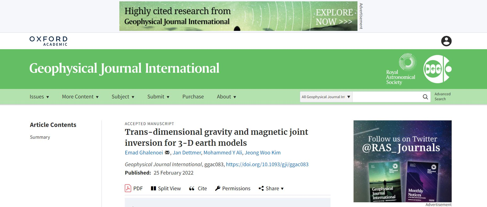

3D Bayesian Inversion
Welcome, it's great to have you here. Want to hear more about Modeling using the Bayesian algorithm in 3D space?
3D model that fits well to gravity (middle map) and magentic data (top map). This model shows a basement (red) and salt structures (blue), and the white space is sediment.
Studying 3-D subsurface structure based on spatial data is an important application for geophysical inversions. However, major limitations exist for conventional regularized inversion when applied to potential-field data. For example, global regularization parameters can mask model features that may be important for interpretation. In addition, 3-D inversions are typically based on data acquired in 2-D at the Earth’s surface. Such data may contain significant spatial error correlations in 2-D due to the choice of spatial sampling, acquisition geometry, ambient noise, and model assumptions. These correlations can cause trade-offs with spatial resolution and should be accounted for. However, correlations are often ignored, particularly 2-D correlations in spatial data, such as potential field data recorded on the Earth’s surface. Nonlinear Bayesian methods can address these shortcomings and we present a new hierarchical model for 2-D correlated errors. Nonetheless, limitations also exist. For example, nonlinear Bayesian estimation requires numerical integration with a considerable computational burden to collect a posterior ensemble of models. For 3-D applications, this cost can be prohibitive. This paper presents a nonlinear Bayesian inversion with trans-dimensional (trans-D) partitioning of space by a hierarchy of Voronoi nodes and planes (VP), and trans-D estimation of the data noise covariance matrix. The addition of planes permits the introduction of prior information which reduces non-uniqueness. The covariance matrix estimation uses a trans-D autoregressive (AR) noise model to quantify correlated noise on 2-D potential-field data. We address computational cost by wavelet compression in the forward problem and by basing susceptibility on an empirical relationship with density contrast. The method is applied to simulated data and field data from off-shore Abu Dhabi. With simulated data, we demonstrate that subsurface structures are well-resolved with the trans-D model that applies hierarchical VP partitioning. In addition, the model locally adapts based on data information without requiring regularization. The method is also successful in reducing 2-D error correlation via trans-D AR models in 2-D. From field data, the inversion efficiently resolves basement topography and two distinct salt diapirs with a parsimonious and data-driven parametrization. Results show a considerable reduction in 2-D spatial correlations of field data using the proposed trans-D AR model.
You can find the full description in my research paper published in Geophysical Journal International (GJI) at https://academic.oup.com/gji/advance-article-abstract/doi/10.1093/gji/ggac083/6536917. .
Python code can be found at my GITHUB: https://github.com/emadghalenoei/3D_Voronoi_Plane_Trans-D_Inversion. 